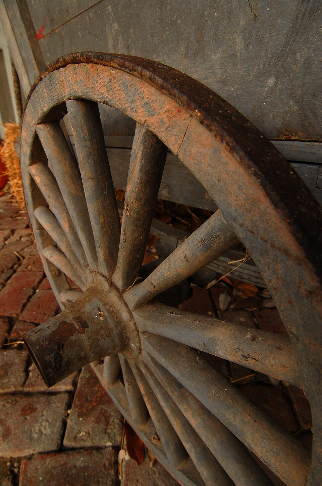
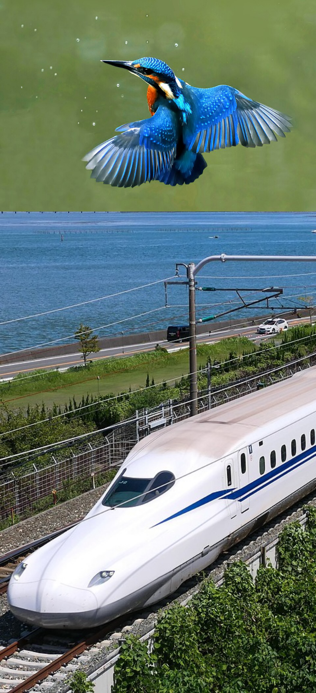
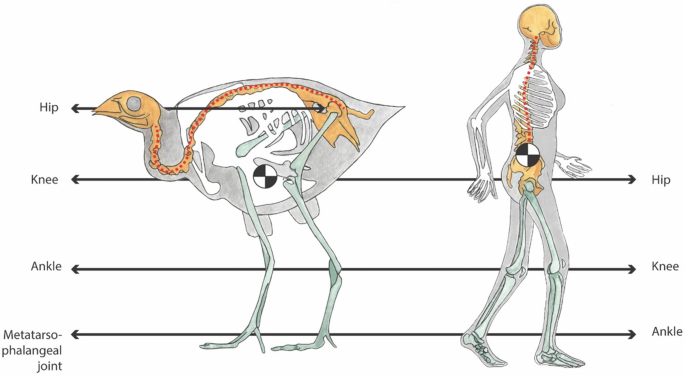
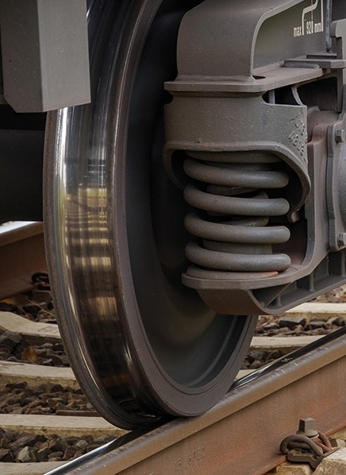

Chapter 1
Locomotion

An AMRAutonomous Mobile RoboticsAutonomous Mobile Robotics needs locomotion mechanisms
which enables it to move
In laboratory settings, there are robots which can walk, jump, run, slide, swim, fly and of course roll.
Most locomotion mechanisms have been inspired by biological counterparts, shown in Tbl. 1.1.
There is, however, one (
Actively powered wheel is a human invention achieving high efficiency on flat ground [†]Bulliet, R. W. The wheel: inventions and reinventions (Columbia University Press, 2016).
This mechanism is NOT completely foreign to biological systems. [1] While this statement is practically true, single cell organism use a similar locomotion to what we call wheel [†]LaBarbera, M. Why the wheels won’t go. The American Naturalist 121, 395–408 (1983).. Our bi-pedal walking system can be approximated by a rolling polygon, with sides equal in length to the span of the step. As the step size decreases, the polygon approaches a circle or wheel.
| Type of Translation | Nature of Movement Resistance | Kinematics of Motion |
| Flow in a channel | Hydrodynamic forces | Eddies |
| Crawl | Friction forces | Longitudinal vibration |
| Sliding | Friction Forces | Transverse vibration |
| Running | Loss of kinetic energy | Oscillatory movement of a multi-link pendulum |
| Jumping | Loss of kinetic energy | Oscillatory movement of a mutli-link pendulum |
| Walking | Gravitational forces | Rolling of a polygon |
But nature did NOT develop a fully rotating, actively powered joint, which is the technology necessary for wheeled locomotion.
Biological systems succeed in moving through a wide variety of harsh environments. Therefore it can be desirable to copy their selection of locomotion mechanisms, which scientifically, this is called Biomimetics [†]Vincent, J. F. et al. Biomimetics: its practice and theory. Journal of the Royal Society Interface 3, 471 (2006).

Nature has had roughly 3.8 billion years to iterate and optimize solutions. Biomimetics relies on this evolutionary genius to create efficient, functional, and often highly sustainable solutions across several major fields.
Replicating nature in this regard, however, is extremely difficult for several reasons.
-
Mechanical complexity is easily achieved in biological systems through
structural replication .Cell division, in combination with specialisation, can readily produce a millipede with several hundred legs and several tens of thousands of individually sensed cilia [3] short eyelash-like filament that is numerous on tissue cells of most animals and provides the means for locomotion of protozoans of the
phylum Ciliophora . In man-made structures, each part must be fabricated individually, and therefore, no such economies of scale exist. -
Cell is a microscopic building block that enables extreme miniaturisation. With very small size and weight, insects achieve a level of robustness that we have not been able to match with human fabrication techniques.
-
The biological energy storage system and the muscular and hydraulic activation systems used in animals and insects achieve torque, response time and conversion efficiencies that far exceed similarly scaled man-made systems.
Based on these aforementioned limitations, AMRAutonomous Mobile RoboticsAutonomous Mobile Robotics generally generate motion, either using wheeled mechanisms, a well-known human technology for vehicles, or using a small number of articulated legs, the simplest of the biological approaches to locomotion, shown in Fig. 1.2.

In general, legged locomotion requires higher DoFDegrees of FreedomDegrees of Freedom and therefore greater mechanical complexity than wheeled locomotion [†]Lyons, D. M. & Pamnany, K. Rotational legged locomotion in ICAR’05. Proceedings., 12th International Conference on Advanced Robotics, 2005. (2005), 223–228. Wheels, in addition to being simple, are extremely well suited to flat ground. As Fig. 1.3 depicts, on flat surfaces wheeled locomotion is one to two orders of magnitude more efficient than legged locomotion.
The railway is ideally engineered for 
But as the surface becomes soft, wheeled locomotion accumulates inefficiencies due to rolling friction while legged locomotion suffers much less because it consists only of point contacts with the ground. This is demonstrated in figure 2.3 by the dramatic loss of efficiency in the case of a tire on soft ground.
the efficiency of wheeled locomotion depends on environmental qualities, such as the flatness and hardness of the ground, while the efficiency of legged locomotion depends on the leg mass and body mass, both of which the robot must support at various points in a legged gait.
It is understandable therefore nature favours legged locomotion, as locomotion systems in nature must operate on rough and unstructured terrain. For example, in the case of insects in a forest the vertical variation in ground height is often an order of magnitude greater than the total height of the insect.
By the same token, the human environment frequently consists of engineered, smooth surfaces both indoors and outdoors. Therefore, it is also understandable that virtually all industrial applications of mobile robotics utilise some form of wheeled locomotion. Recently, for more natural outdoor environments, there has been some progress toward hybrid and legged industrial robots such as the forestry robot [†]Schweitzer, G. ROBOTRAC-a Mobile Manipulator Platform for Rough Terrain in Proc. of Int. Symp. on Advanced Robot Technology (1991), 411–416 shown in Fig. 1.4.
Now, we present general considerations that concern all forms of AMRAutonomous Mobile RoboticsAutonomous Mobile Robotics locomotion. Following this will be overviews of legged locomotion and wheeled locomotion techniques for mobile robots.
1.1 Legged Mobile Robots
1.1.1 Examples of Legged Robot Locomotion
1.2 Wheeled Mobile Robots
1.2.1 Design
1.2.2 Stability
1.2.3 Manoeuvrability
1.2.4 Controllability
1.2.5 Case Studies for Wheeled Motion
1.2.6 Walking Wheels
Locomotion is the
-
In manipulation, the robot arm is fixed but moves objects in the workspace by imparting force to them.
-
In locomotion, the environment is fixed and the robot moves by imparting force to the environment.
For both cases, the scientific basis is the
-
Stability
-
number and geometry of contact points
-
centre of gravity
-
static/dynamic stability
-
inclination of terrain
-
-
characteristics of contact
-
contact point/path size and shape
-
angle of contact
-
friction
-
-
type of environment
-
structure
-
medium (e.g., water, air, soft or hard ground)
-
A theoretical analysis of locomotion begins with mechanics and physics. From this starting point, we can formally define and analyse all manner of mobile robot locomotion systems. However, this Lecture Book puts more emphasis on the mobile robot navigation problem, particularly on the topics of perception, localisation and cognition. Therefore, we will not delve deeply into the physical basis of locomotion. Nevertheless, two remaining sections in this chapter present overviews of issues in legged locomotion and wheeled locomotion.